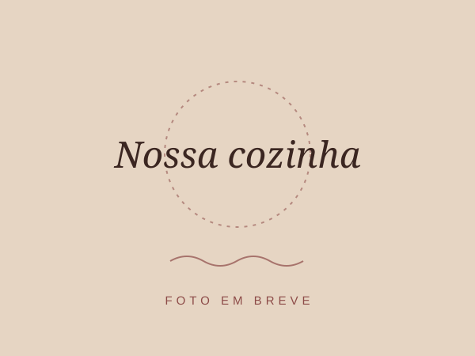

Pura Doçura
Pura Doçura — início
Início
Nossa história
Pedido
Nossa história
Tudo começou
numa cozinha de casa

Em breve
Nosso manifesto
Feito à mão,
feito com amor,
feito para você.
Pura
PURA DOÇURA · CONFEITARIA ARTESANAL · FEITO À MÃO ·
Faça seu pedido